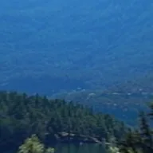

360° görüntüleyici

360° panoramik katmanı, döndürüp yakınlaştırabileceğiniz sanal bir kamera aracılığıyla gösterir.
Ayarlar
| Ayar | Tür | Aralık | Varsayılan |
|---|---|---|---|
| Sapma | Açı | -3600° – 3600° | 0° |
| Eğim | Açı | -3600° – 3600° | 0° |
| Yatış | Açı | -3600° – 3600° | 0° |
| Görüş alanı | Sayı | 1 – 179 | 90 |